What I Owned
I ran the primary fieldwork — attending a full nature workshop at Green Oasis Community Garden as a first-time participant. I also worked on early iterations of the pamphlet design.
NYC runs the largest community gardening program in the country on volunteering — and every one of its 550+ gardens onboards those volunteers differently. We designed an artifact that could travel across all of them.
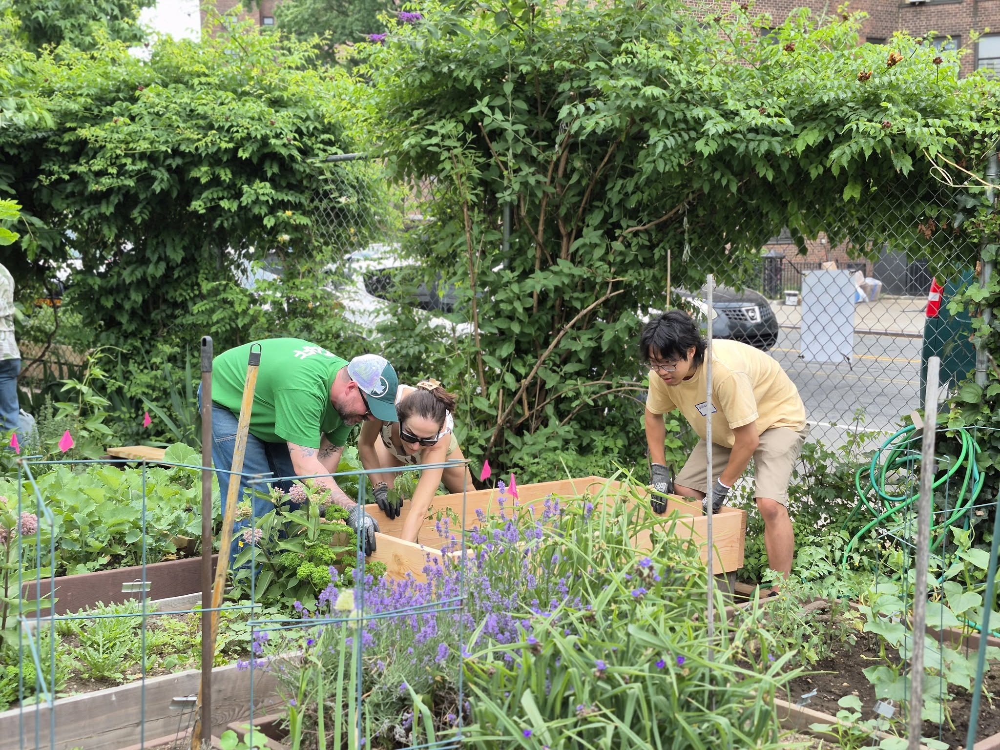
Source: GreenThumb Facebook page
What I Owned
I ran the primary fieldwork — attending a full nature workshop at Green Oasis Community Garden as a first-time participant. I also worked on early iterations of the pamphlet design.
The Team
Darren Chia, Kathy Choi, Phil Cote. Stakeholder interviews, insight synthesis, and the pamphlet prototype were shared work. Client: GreenThumb, NYC Parks.
GreenThumb supports more than 550 community gardens and 20,000 volunteers across all five boroughs, making it the largest community gardening program in the nation.
Share of New York City land Parks manages
14%Share of the city budget Parks receives
0.5%The gardens themselves grew out of vacant lots that neighbors adopted, cleared, and defended, and are still independent; community-led by design.
Gardens set their own priorities and reflect their own neighborhoods; GreenThumb facilitates and connects rather than owns or controls.
Jason Stein — Assistant Director of Operations
"Volunteer programs are often seen as 'nice-to-haves,' when in reality they're essential infrastructure. Designers can help elevate that narrative — showing that volunteer work isn't filler; it's fundamental."
Jason Stein, GreenThumb
Kyleen Sanchez — Volunteer Program Coordinator
"Recruitment is one of our biggest challenges because our scope is citywide. We keep it as accessible as possible: no portal, no minimum hours, no prior experience."
Kyleen Sanchez, GreenThumb
Kyleen's job is to hold two things at once: the specific needs of an individual garden against a citywide entry point that has to stay open to every skill level and every degree of intent.
Macro Findings
A small operations and volunteer-coordination team supports 550+ gardens spread from Staten Island to Far Rockaway, on a volunteer program funded at roughly $10,000 a year — less than 1% of the city's budget.
The citywide volunteer program is also new, doing the work of bridging community gardeners and everyday New Yorkers, addressing an urgent succession gap.
"Our challenge is to keep membership strong, bring in younger generations, and help gardens stay open as older gardeners age out."
Kyleen Sanchez, GreenThumb
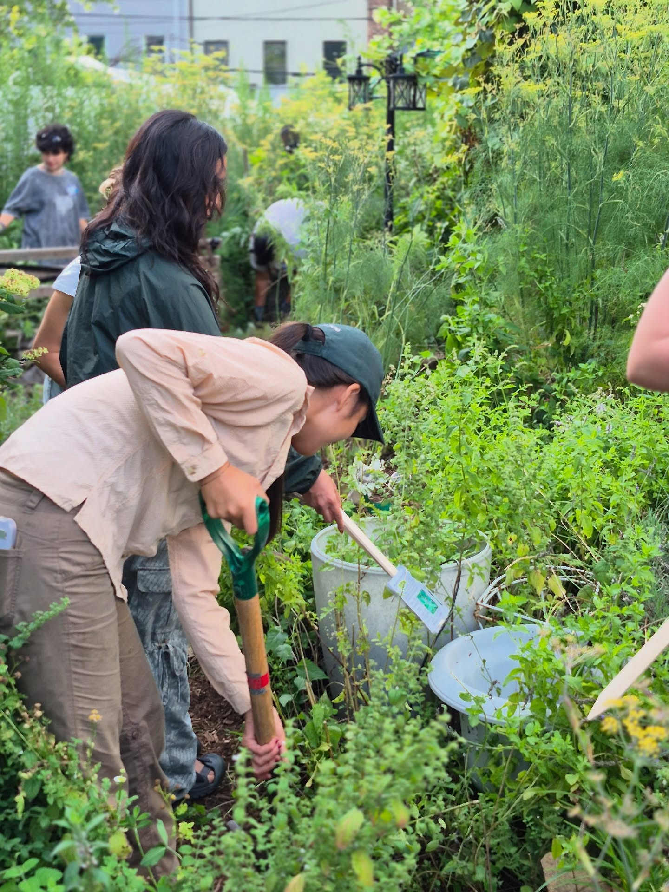
Source: GreenThumb Facebook page
Who We Talked To
We interviewed Abby Highland, garden leader at 462 Halsey Community Garden, and Catherine Lin, garden leader at Green Oasis. Burnout and succession surfaced unprompted, in separate conversations as things people are worried about right now.
A Few People Hold Everything
These gardens are entirely volunteer-led; a core group handles operations, events, admin, and grants, and external pressure — development threats, pests, neighborhood change — lands on the same few people.
"Having people get meaningfully engaged is the most important thing because if you can't get a leader off of their position with another one lined up to take up on all of the responsibilities that they've been holding then that burnout can cause like things to just combust."
Abby Highland, 462 Halsey Community Garden
Fieldwork
I attended a workshop at Green Oasis Community Garden in the Lower East Side as a first-time participant. The point wasn't to audit the garden. It was to find where comfort and confusion show up across a volunteer day — a map of where an intervention could sit along the volunteer journey.
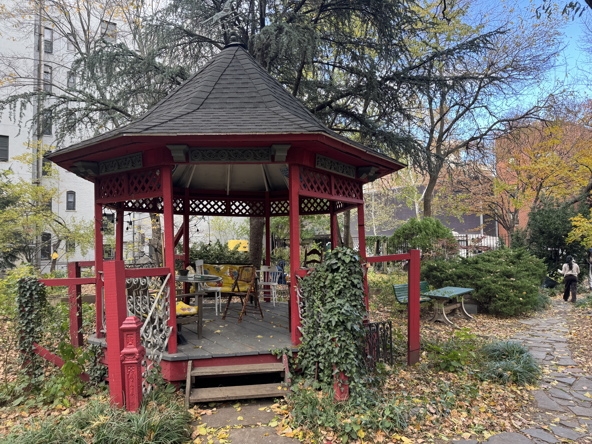
Green Oasis Community Garden, Lower East Side.
I walked up and found four or five volunteers already mid-task, pulling invasives from a bed. I explained why I was there; they redirected me to the back of the garden to find Surya and Catherine.
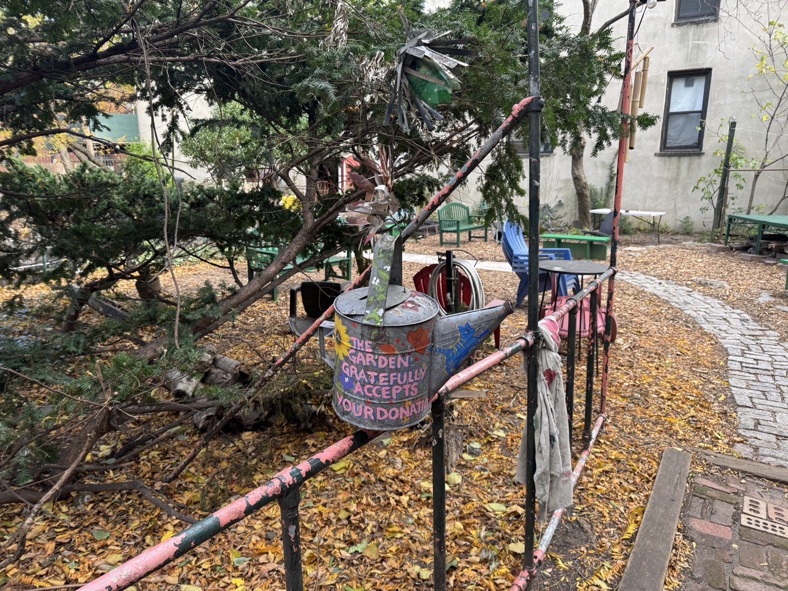
The workshop launched from a picnic table scattered with reading and writing materials. The table was simultaneously the meeting point and the physical evidence of how the space actually gets used day to day: what a first-time volunteer needs to see and feel.
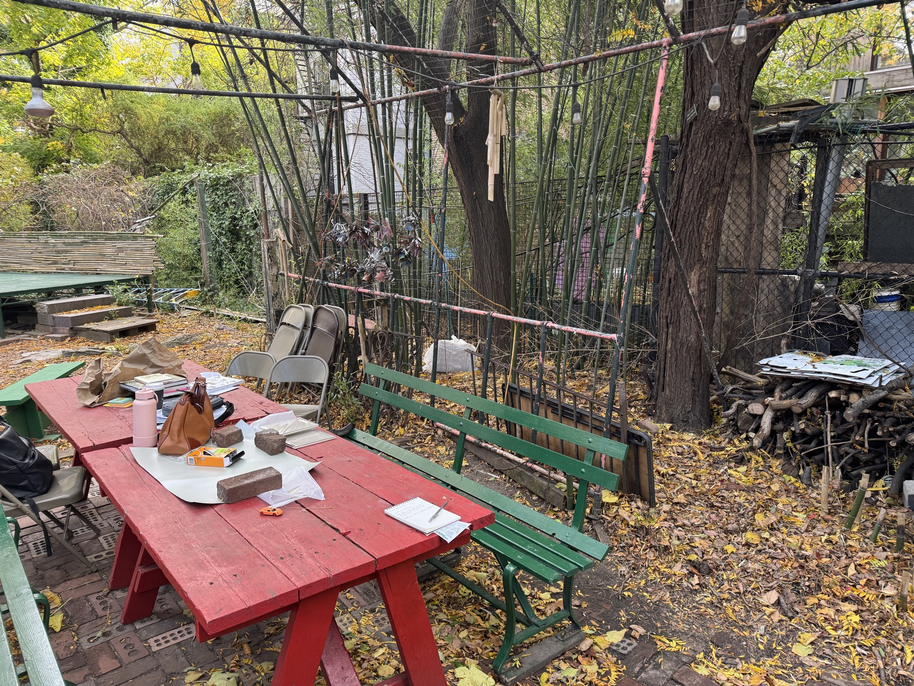
Materials of the day.
Surya and Catherine opened with a tour covering composting, native plants, and the garden's origins — including that Green Oasis was formed from the merger of two separate gardens, and that the 20,000-gallon pond was dug by hand by its founders.
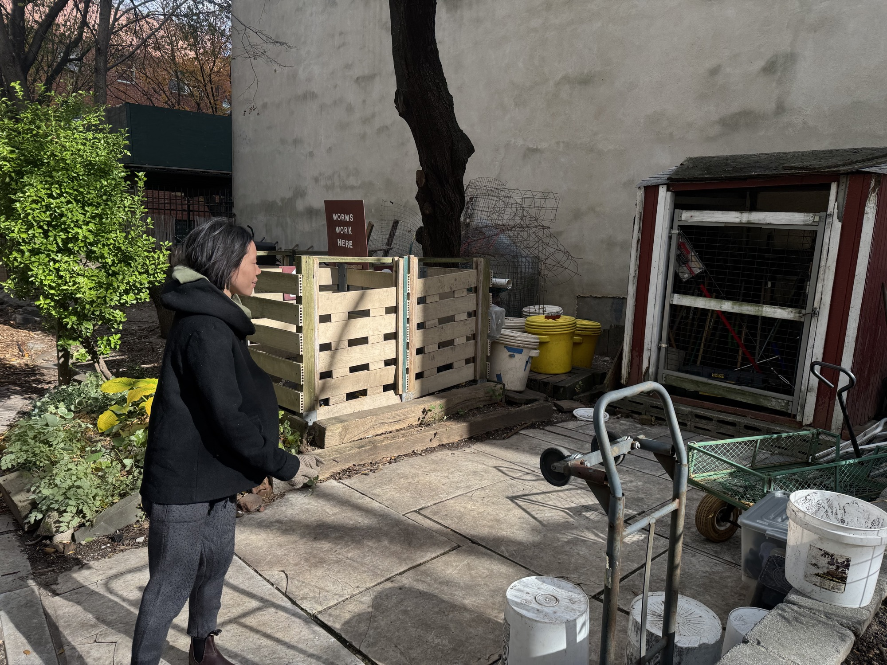
Structured around three prompts: what do you notice, what do you wonder, what does it remind you of. Illustrated guides were handed out. People reflected, wrote, then discussed. This handout would later serve as inspiration for our prototype design.
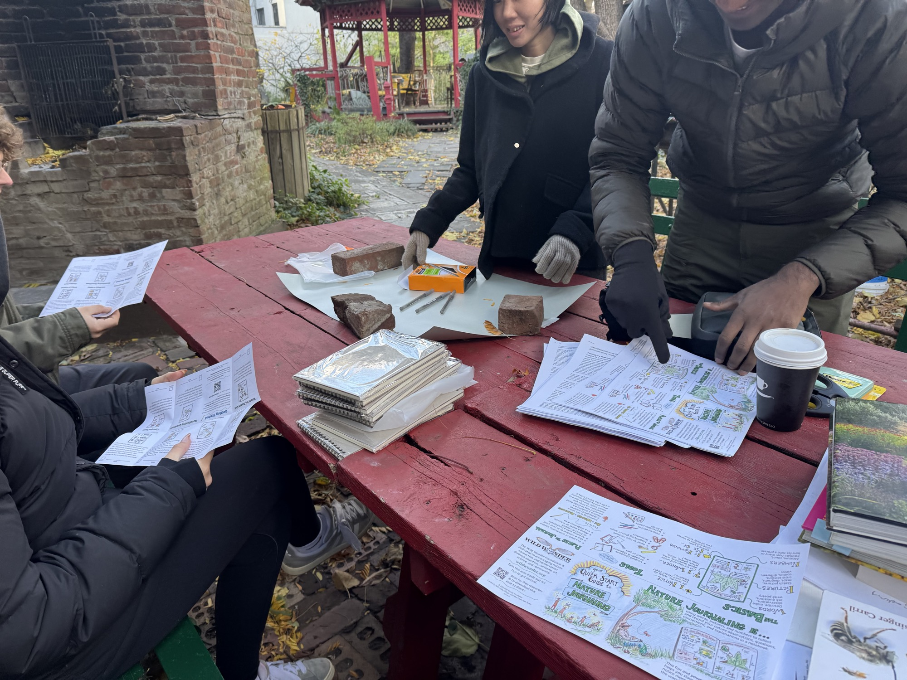
A discussion of what people had written, then a collective ecosystem-mapping exercise building a relationship web out of sticky notes. Two short readings and a closing conversation over tea ended the day.
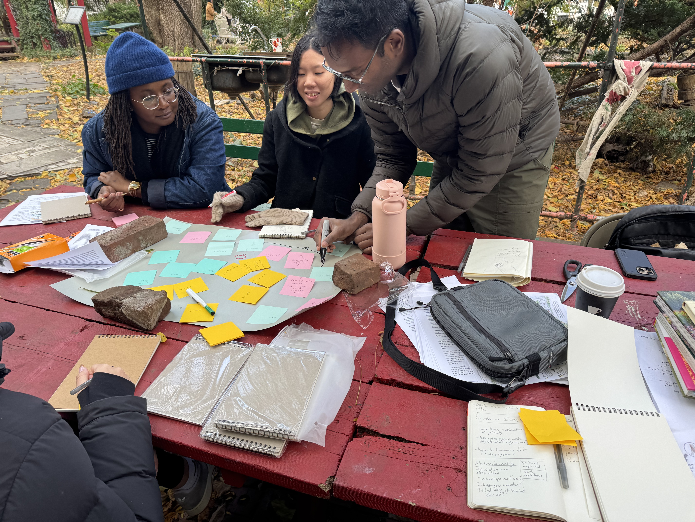
The two gardens we knew best run on opposite models — 462 Halsey is a top-down hierarchy of roughly 30 members handling 100–120 volunteers around first-time "hands in dirt" farm work; Green Oasis is non-hierarchical and pedagogical, teaching ecosystems to a smaller group. Both are 100% volunteer-run, both circle up to debrief at the end of a workday, and both have the same retention problem.
Insight 01
At Green Oasis, volunteers hear the garden's history before they journal or map it — knowledge that isn't written down anywhere else. That story can motivate volunteers toward long-term stewardship.
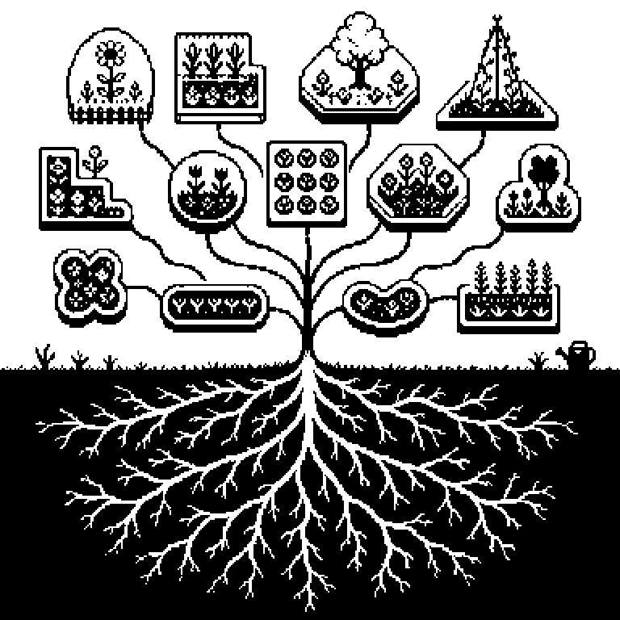
Insight 02
Kyleen's team already sees skilled volunteers leave after a short stretch. Nothing asks what they're good at before they're given a task. That gap keeps them from growing into larger roles.
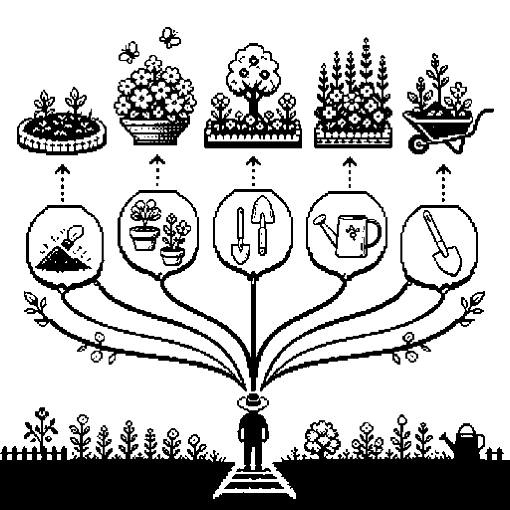
The Prototype
Two formats came up: an ecosystem visualization, a workshop redesign. Both need a screen or capacity we lack.
A pamphlet fits what's already in place: handed out as the leader introduces the garden. It needs no portal or login, meeting Kyleen's constraint.
Three parts follow the research: history and mission, since that story lives in memory and leaves with its teller; tasks paired with tools and benefit; a reflection page volunteers keep.
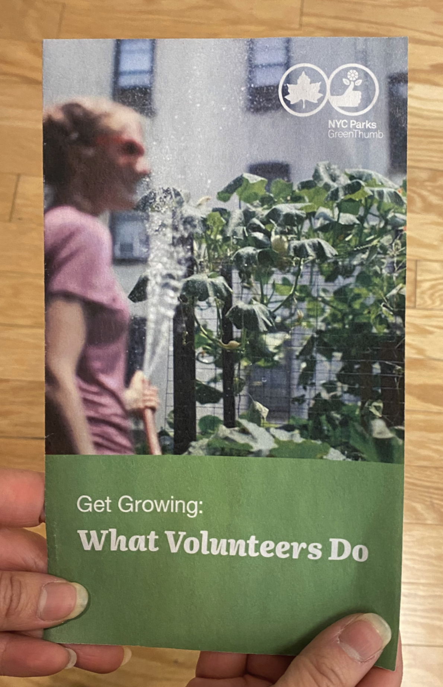
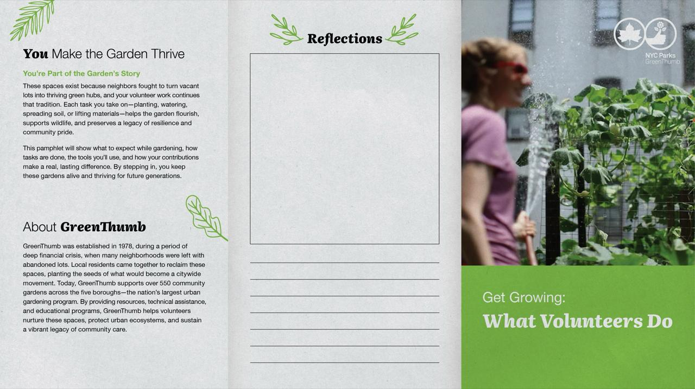
"You Make the Garden Thrive" frames the volunteer as part of a legacy rather than a labor pool: these spaces exist because neighbors fought to turn vacant lots into thriving green hubs, and each task continues that. "About GreenThumb" supplies the context most volunteers never get — 1978, fiscal crisis, 550+ gardens, largest urban gardening program in the nation. "Reflections" is deliberately blank: lined space for what someone noticed, learned, or wants to come back to. It's the piece that makes the pamphlet theirs after the workday ends.
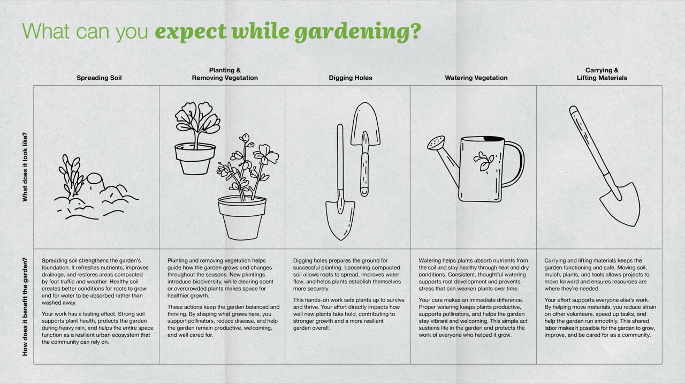
Five tasks — spreading soil, planting and removing vegetation, digging holes, watering, carrying and lifting materials — each with a hand-drawn illustration and two answers: what does it look like, and how does it benefit the garden. The second question is the one that does the work. Watering isn't watering; it's how plants absorb nutrients through heat and dry conditions. Carrying materials isn't hauling; it's how you reduce strain on everyone else. The illustrations are hand-drawn on purpose — a rendered UI would have read as a city form, which is the opposite of what a garden feels like.
The prototype is untested. Everything in this case study about what the pamphlet does for a volunteer is a design argument, not a finding.
The reflection page has an unresolved problem at the center of it. It only becomes useful to a garden if leadership can see what volunteers wrote — but the entire premise of this project is that garden leaders have no spare capacity. We designed a feedback loop and did not design the mechanism that closes it.
Test it where the research came from: workdays at 462 Halsey and Green Oasis, with real first-time volunteers and the leaders who would have to hand it out. The open question to answer there is the capture problem — what's worth collecting from a reflection page, and how leadership can use it without inheriting more work.
Then take it back to GreenThumb to assess whether it's practical to roll out network-wide. The more interesting version of that conversation isn't onboarding. Jason's argument is that volunteer work is essential infrastructure rather than filler, and a volunteer who understands the stakes of the garden they just worked in is someone who can make that argument in public. The pamphlet's second life may be advocacy.
Next Case Study
CivicGuide →